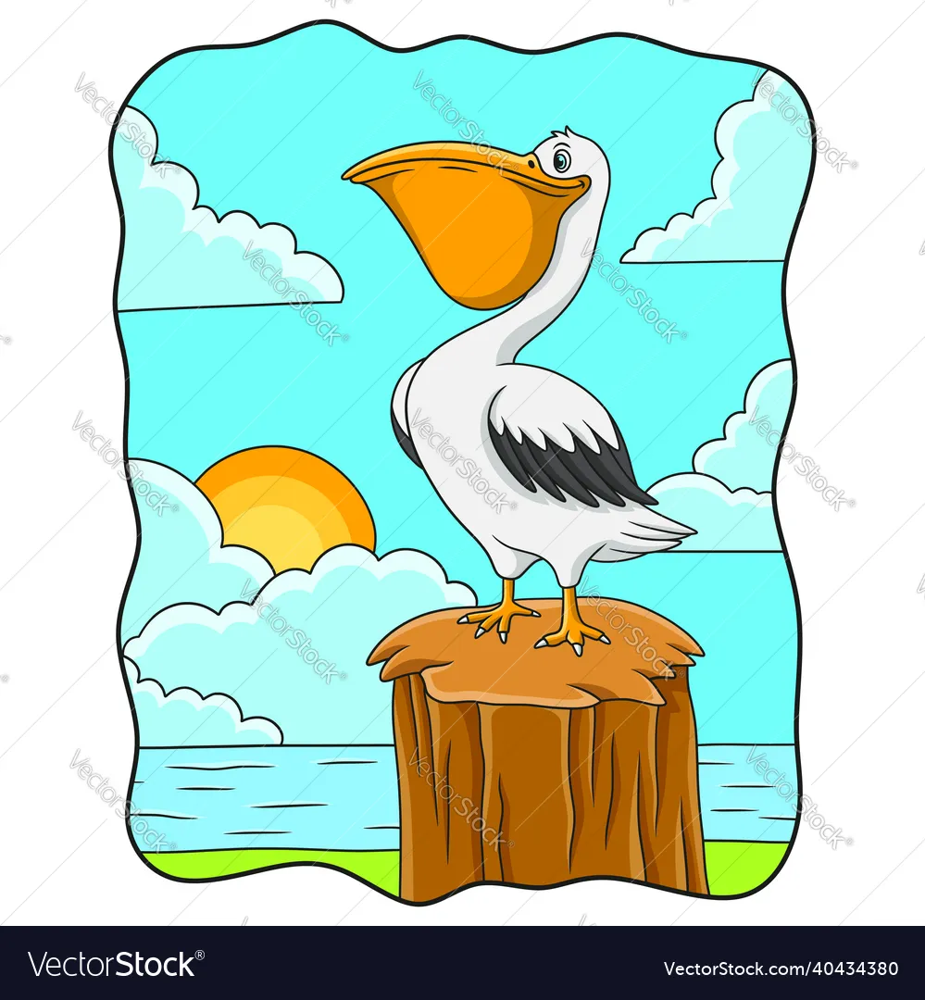

Welcome to the Story Time
THE PHOTOGRAPHER AND HIS DAUGHTER
Auther Of The Story: JaiannahJones
Illustrated By: NicelinJones
Edited By: Subha

Once upon a time there was a photographer. He lived in London city.He was a excellent photographer. He took a lot of amazing pictures.One day Gloria was seeing her dad's photos. Gloria is a daughter of Paul the photographer. She told her dad,"Dad I also want to be a photographer like you".

Days passed by after 20 years later. Gloria grown up as a beautiful young girl. As expected she became a photographer. One day she went to a resort in Maldives. Maldives is a beautiful Island. There are many resorts here. It's a pleasant place. In the morning of that day Gloria went out of her villa, She sat on the swing and she enjoyed the morning.

At the time there was one beautiful and rare bird which was called pelican. The pelican was catching some fishes in the sea shore. Gloria got down slowly from the swing and went to the villa with out making any noise. She took her camera and try to take a photo. She took some photos but the bird was moving so the photos was uncleared.

seeing the pelican was not cooperating to take a picture. So Gloria slowly moved near the pelican and she captured the pelican. She tied one of the pelican's leg. Then she tried to take a picture with the pelican. Gloria tried a lot of time to take a picture with the pelican but she couldn't take a good photo with the bird. The pelican didn't cooperate with her. It was moving, shouting and irritating her. Gloria got tired and fed up. She was shouting at the bird with angryness. She dropped taking pictures and sat on the swing. At the time her phone was ringing. She took the phone it was her dad calling. She told her dad all the difficulties she faced with the pelican. Then her dad told her, "Gloria birds are also living things it can't speak with us but it also has feelings. So if you show your angryness it will not cooperate with you instead try to show your kindness". Her dad diclained the call. This time Gloria didn't show her angryness instead she went near the bird and untied the rope and she put some medicine in the birds leg. She spoke with the bird. And said sorry to the bird she allowed the bird to fly and she said, "bye bye", she went back to her villa.

Surprisingly after five miniutes the bird just came and sat on her shoulder. Gloria was very happy. Now she took a photo with the pelican. It was cooperating with her. Both took a lot of good and amazing photos. Now the pelican became friends with Gloria.
The Moral
In this story Gloria expressed the love and kindness to the pelican. So the bird again expressed love to her. Even though posing was difficult to the pelican .It bears all those things and endureth all things and cooperated with Gloria for a pose. Finally they became friends. Not only to the birds if we expressed love and kindness to our friends instead of getting angry when they irritate us.They also repent and again express their love. We can get good friends.
"The love Beareth all things, Believeth all things, Hopeth all things, Endureth all things." 1 corinthians 13:8